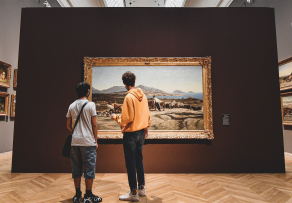

Actualités
-
Education

À l'heure où les étudiants marseillais sont confrontés à de nouvelles mesures de confinement liées à l'urgence sanitaire en cours, la Ville de Marseille a voulu, avec ses partenaires associatifs, leur apporter sa solidarité alors même que beaucoup d'entre eux disposent de peu de moyens pour assurer leur quotidien. Parallèlement les services du CROUS se mobilisent également pour tenir compte de cette situation.
-
Economie

Consommons local ! Une plateforme Internet pour accompagner la numérisation des commerçants marseillais.
-
Culture
#Culturecheznous : la culture à portée de clics pendant le confinement !
-
Mairie
Des services en ligne pour faciliter vos démarches.
Activités
Plage catalans
C’est la plage de sable la plus accessible quand on se trouve dans le centre-ville de Marseille. Située à quelques minutes à pied du Vieux-Port, elle permet...
Activités
Plage catalans
C’est la plage de sable la plus accessible quand on se trouve dans le centre-ville de Marseille. Située à quelques minutes à pied du Vieux-Port, elle permet...